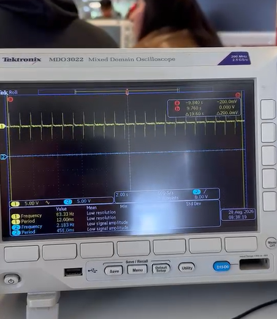
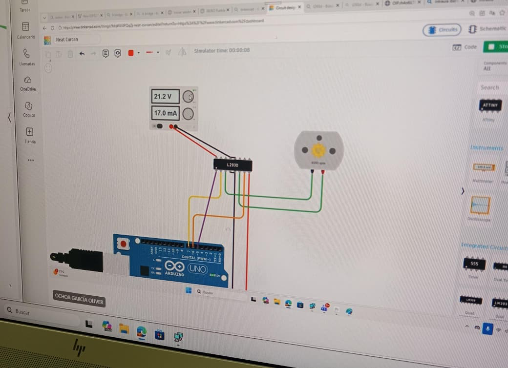

Portafolio Mecatrónica
Hola, soy Eduardo Gutierrez. Me metí a mecatrónica porque se me hace una carrera muy entretenida debido a todo el trabajo manual que conlleva y la mezcla que tiene entre programación, electrónica, trabajos en madera, corte láser e impresión 3D.
Esta pagian web la cree desde visual estudio con una conexion directa de GitHub, al crear un nuevo repertorio usar ese link y pegarlo aqui, use este grupo de comandos diferentes
Programa 1
En este programa logramos hacer que un LED parpadee a cierta velocidad aumentando el delay entre acción y acción.
Que elementos utilise en esta practica?
- Item A
- Subitem A.1
- Subitem A.2
- temporisador 555
- Capacitor electrolítico de 33 μF
- Capacitor electrolitico de 10 μF
- Capacitor cerámico de 10 nF
- Resistencia 1KΩ
- Resistencia 15KΩ
- Resistencia 220 Ω
- Led azul
- Cables de puente
- Protoboard
En esta practica logre aprender los basicos de la electronica el funcionamiento de microchips pricipalmente t como usar sus entradas y salidas y como varian segun cada uno, aqui se puede ver la protoboard armada y el funcionamiento de la misma
Aqui se puede observar como se ve el led parpadeante en un osiloscopio

Programa 2
En esta práctica empezamos el uso de los Arduinos con un código básico que marca el encendido o apagado mediante el uso de un push button junto con la conexion de el bluetooth mediante el celular que elementos utilise?
- ESP32
- Protoboard
- 2 LEDs azules
- 2 resistencias de 220
- Botón pulsador
- Cables de puente
- Cable USB
En la primera parte de esta practica usamos el arduino para proframas un boton simple de encendido y aoagado en el siguinete video podemos ver su funcionamiento
Durante esta misma práctica, con el uso del Arduino y una aplicación de celular, logramos enlazar los aparatos para permitir que una acción pudiera ser transferida del celular al Arduino:
Aquí se puede observar el código que fue usado:
#include <BTAddress.h>
#include <BTAdvertisedDevice.h>
#include <BTScan.h>
#include <BluetoothSerial.h>
BluetoothSerial Mi_tel;
void setup() {
Mi_tel.begin("Edu");
Mi_tel.setTimeout(20);
Serial.begin(9600);
pinMode(32, OUTPUT);
}
void loop() {
if(Mi_tel.available()){
String mensaje = Mi_tel.readStringUntil('\n');
mensaje.trim();
if(mensaje == "OFF"){
digitalWrite(32,1);
}
if(mensaje == "ON"){
digitalWrite(32,0);
}
}
}
programa 3
en esta practica aprendimos a usar tinkercad y vimos las bases de el controlamiento de motores basicos y servo motores hicimos dos practicas la primera la mas basica fue hacer que un motor cambiara de direccion su rotacion, tambien aprendimos un nuevo tipo de microcontrolador el puente h el cua es el responsable de poder invertir las direcciones de los motores.

en el segundo sistema hicimo s que el arduino lograra cambiar la direccion de 3 motores dos normales y un cervo motor, la diferencia entre el servomotor y el normal es que tiene una mayor exactitud y precision a la hora de marcarle pautas este fue el codigo que utilisamos
este fue el codigo que utilisamos
#include <Servo.h>
Servo motor;
void adelante(){
digitalWrite(6, HIGH);
digitalWrite(7, LOW);
digitalWrite(2, HIGH);
digitalWrite(3, LOW);
}
void atras (){
digitalWrite(7, HIGH);
digitalWrite(6, LOW);
digitalWrite(3, HIGH);
digitalWrite(2, LOW);
}
void der (){
digitalWrite(6, HIGH);
digitalWrite(7, LOW);
digitalWrite(3, HIGH);
digitalWrite(2, LOW);
}
void izq (){
digitalWrite(7, HIGH);
digitalWrite(6, LOW);
digitalWrite(2, HIGH);
digitalWrite(3, LOW);
}
void setup()
{
//SERVO
motor.attach(9);
//MOTOR
pinMode(6, OUTPUT); //OUT1
pinMode(7,OUTPUT); //OUT2
pinMode(3, OUTPUT); //OUT1
pinMode(2,OUTPUT); //OUT2
digitalWrite(5, HIGH);
digitalWrite(1, HIGH);
}
void loop(){
motor.write(0);
delay(1000);
motor.write(90);
delay(1000);
motor.write(180);
delay(1000);
adelante();
delay(1000);
atras();
delay(1000);
der();
delay(1000);
izq();
delay(1000);
}